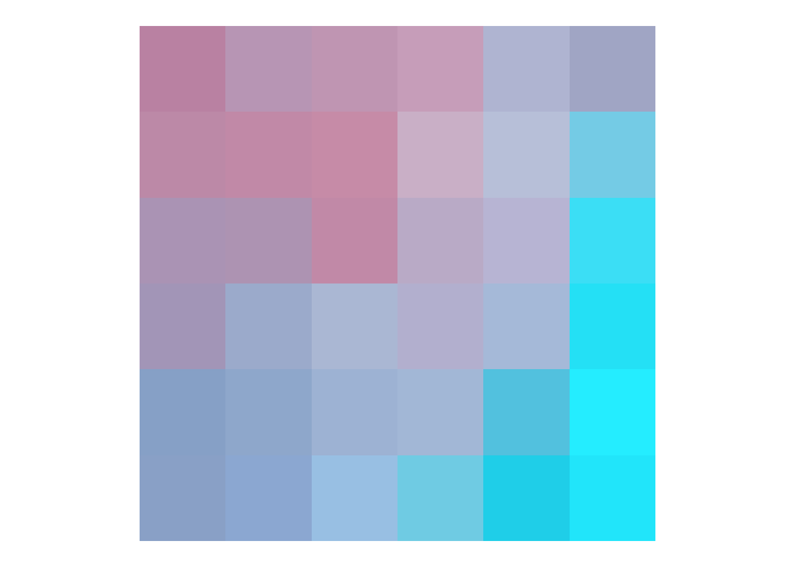

[,1] [,2] [,3] [,4] [,5] [,6] [,7] [,8] [,9] [,10] [,11]
[1,] 275 282 373 342 357 326 372 318 400 243 303
[2,] 230 318 316 351 345 346 359 331 395 225 288
[3,] 164 337 258 342 363 350 349 320 395 280 321
[4,] 168 337 261 354 358 364 339 377 368 309 284
[5,] 202 322 250 380 362 373 327 393 360 379 326
[6,] NA 310 270 361 370 363 368 368 385 383 297
[7,] NA 277 310 291 375 365 375 355 343 407 220
[8,] NA 181 325 264 381 373 389 341 305 395 252
[9,] NA NA 313 264 370 384 392 328 357 376 289
[10,] NA NA 298 285 370 380 386 354 349 385 311
[11,] 402 NA 333 293 356 382 376 391 329 352 361Raster Data
- The spatial raster data model represents the world with the continuous grid of cells (a.k.a. pixels)
- This data model often refers to so-called regular grids, in which each cell has the same, constant size
- We will focus on the regular grids only. However, several other types of grids exist, including rotated, sheared, rectilinear, and curvilinear grids (see Chapter 1 of Pebesma and Bivand (2023)).


A simple example: Elevation

A more complex example: RBG Image
- A lot of raster data is obtained using remote sensing (RS)
- Typically, RS imagery consists of more than 1 band
- In this case, the data is stored in a 3 dimensional array (where band is the 3rd-dimension)
- A RS image can contain any number of bands.
- The most well known type of RS imagery consists of 3 Bands in the red, blue and green spectrum


Each band is a 2D matrix


NirGB Image


Representations of multispectral data
- A true color image is created by using the Red (3), Green (2) and Blue (1) Band and mapping these to RGB
- A false color image is created by mapping other bands to RGB


Pebesma, Edzer, and Roger Bivand. 2023. Spatial Data Science: With Applications in R. Boca Raton: Chapman; Hall/CRC. https://doi.org/10.1201/9780429459016.